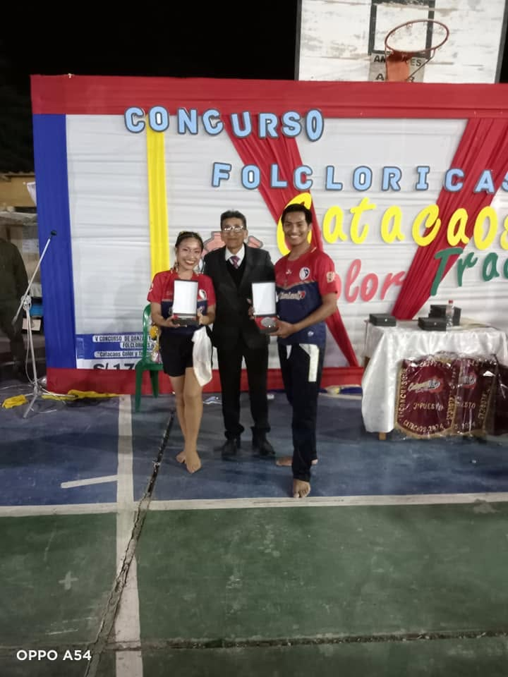
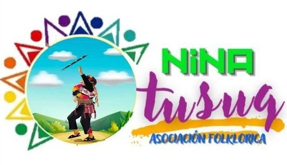
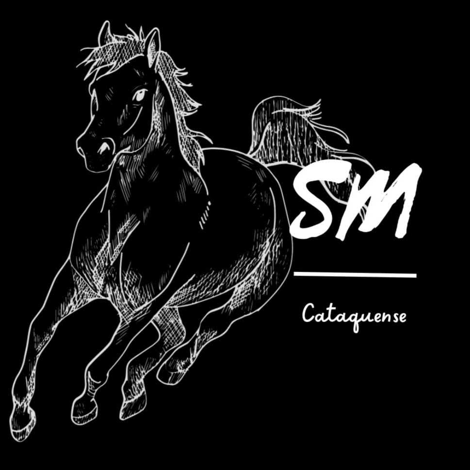
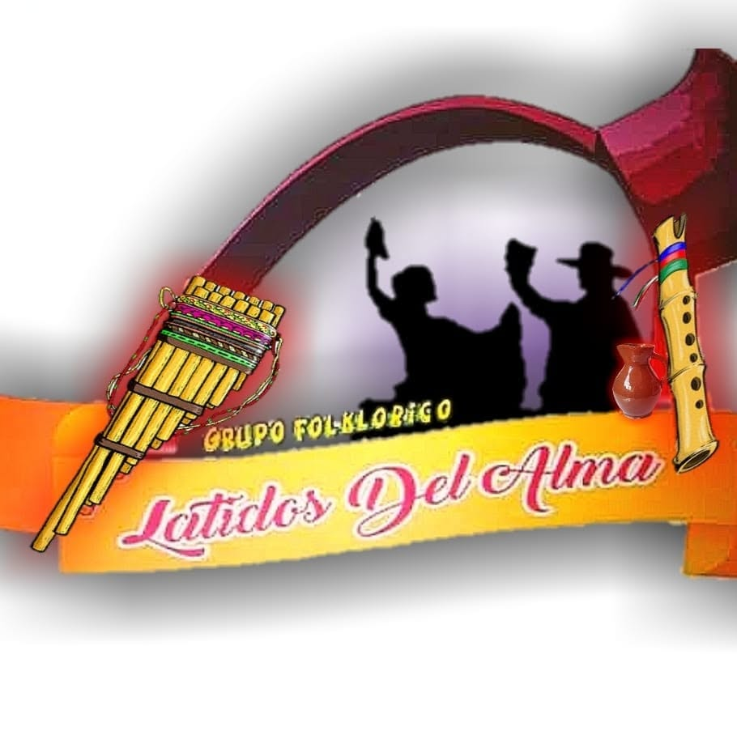
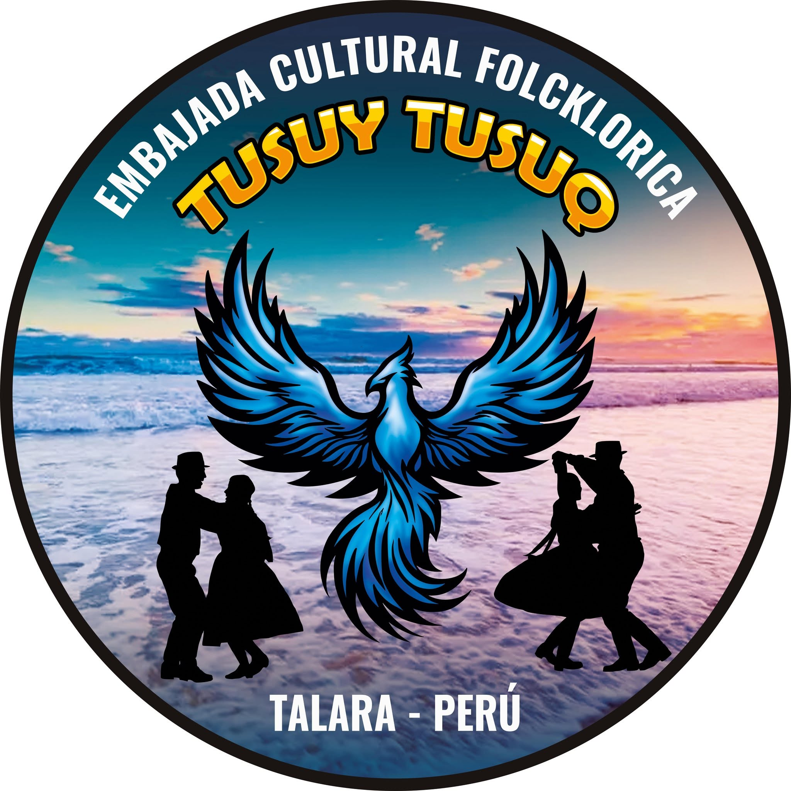
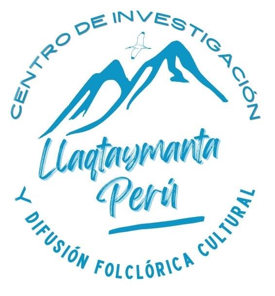
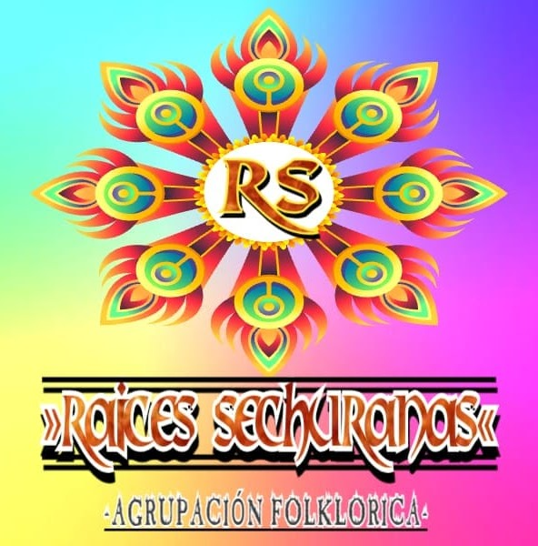
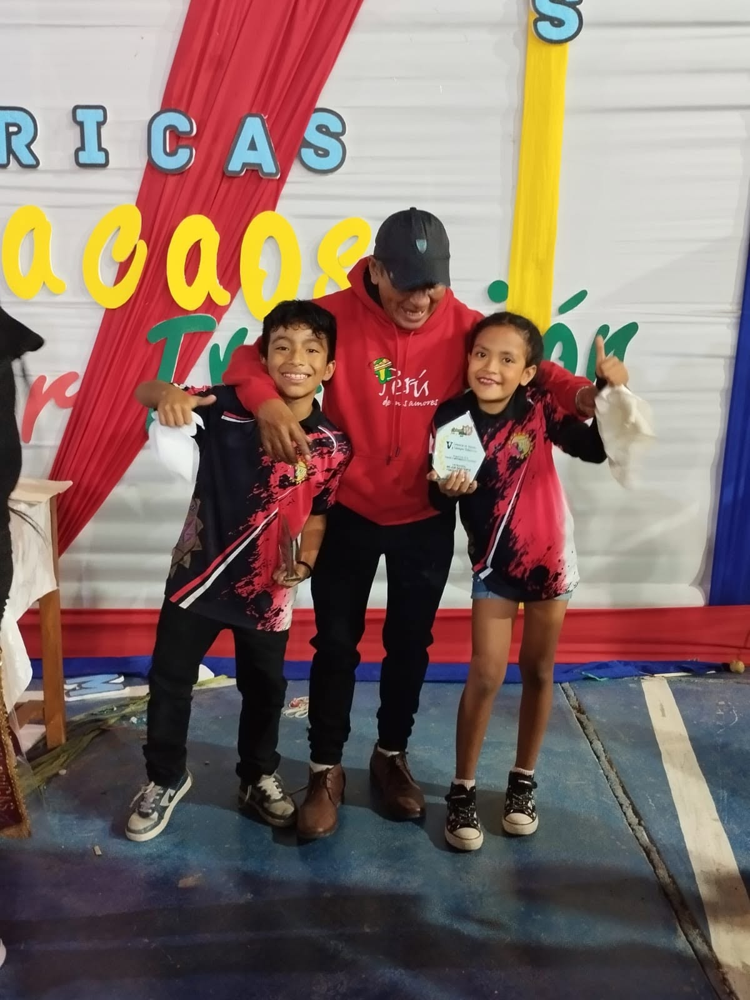
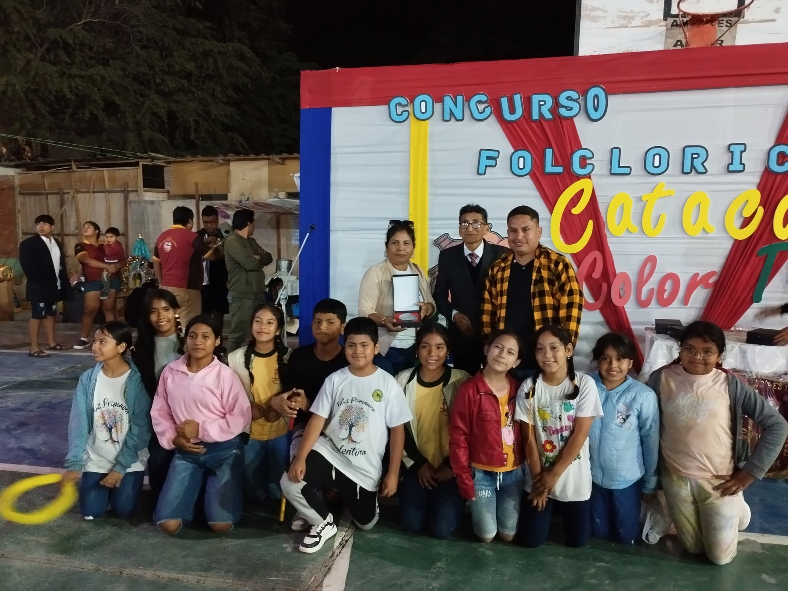
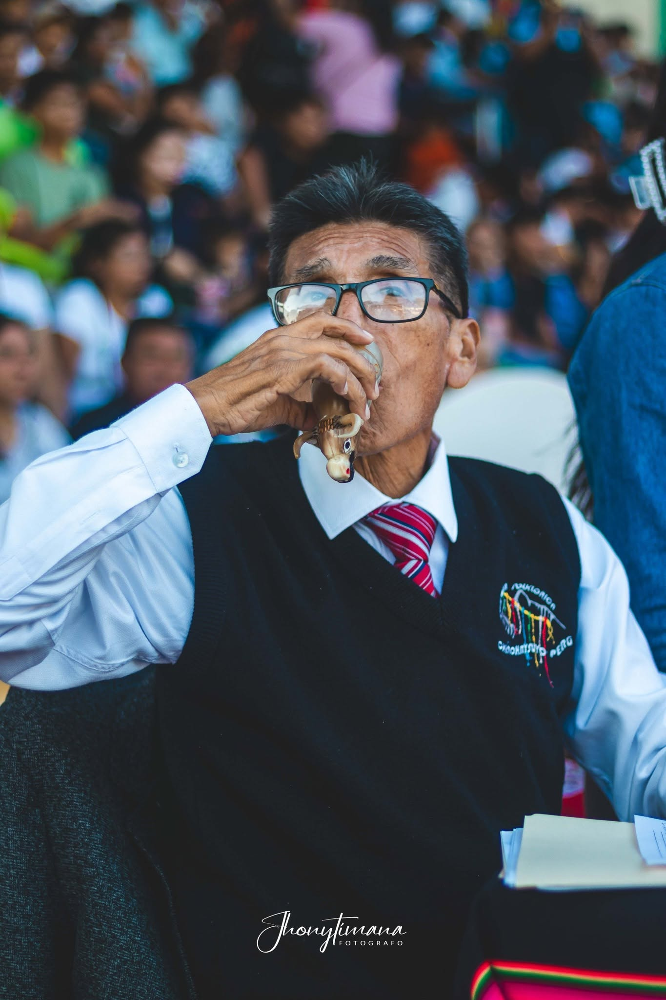

🏅 Mejor Danzante Masculino
Bryan Alexander Suarez Alvarez
Sentimiento y Corazón
La quinta edición marcó un nuevo paso en la historia del concurso con la incorporación de la categoría infantil y una mayor participación de agrupaciones folklóricas.
20 de octubre de 2024
Catacaos, Piura
20 agrupaciones
General / Infantil
Una mirada general a los hechos más importantes de esta edición.
La quinta edición de Catacaos, Color y Tradición reunió a más de 20 agrupaciones folclóricas de diferentes partes del país, consolidando el crecimiento alcanzado por el concurso en los últimos años.
Durante la jornada se presentaron 30 danzas, distribuidas en tres bloques clasificatorios (A, B y C), convirtiéndose en una de las ediciones con mayor participación y nivel competitivo de la historia del certamen.

La gran novedad del 2024 fue la incorporación de la categoría Infantil, en la que participaron siete agrupaciones conformadas por niños y niñas, quienes demostraron que el folclore también se vive con pasión desde temprana edad.
Antes de la gran final de la categoría general, los pequeños artistas emocionaron al público con sus presentaciones, marcando el inicio de una nueva etapa para el concurso y reafirmando el compromiso con las futuras generaciones de bailarines.

La gran final reunió a las nueve mejores agrupaciones clasificadas de los tres bloques. Tras una competencia de alto nivel, el jurado otorgó el campeonato a Sentimiento y Corazón, seguido por Centro Cultural Mamá Gusti, mientras que Tierra de Sol completó el podio a tan solo un punto del segundo lugar.
El alto nivel artístico demostrado durante toda la jornada reafirmó a Catacaos, Color y Tradición como uno de los concursos folclóricos más importantes de la región Piura.














Vuelve a disfrutar de la transmisión del concurso Gracias a RASEC PERÚ.
| Agrupación | Danza | J1 | J2 | J3 | Total |
|---|---|---|---|---|---|
| Mamá Gusti | Fiesta Patronal de Pundín | 85 | 85 | 86 | 256 |
| Latidos del Alma | Torollay Pukllay | 84 | 80 | 83 | 247 |
| Pasión Folclórica | Santa Cruz de Layme | 81 | 82 | 85 | 248 |
| Tierra de Sol | Quiullo de Chauca | 87 | 86 | 85 | 258 |
| Perú Ritmo y Color | Diablícos de Huancabamba | 85 | 85 | 86 | 256 |
| Tusuy tusuq | Carnaval de Totos | 86 | 83 | 85 | 254 |
| Agrupación | Danza | J1 | J2 | J3 | Total |
|---|---|---|---|---|---|
| Llaqtaymanta Perú | Huaquillas de Matacoto | 86 | 83 | 85 | 254 |
| Maya | Carnaval de Socos | 86 | 84 | 85 | 255 |
| Raíces Sechuranas | Papa Tarpuy | 82 | 80 | 82 | 244 |
| Sentimiento y Corazón | Morenada Puneña | 86 | 86 | 85 | 257 |
| Identidad Cultural | Carnaval de Socos | 85 | 84 | 83 | 252 |
| Warma Kuyay | Carnaval de Secclla | 85 | 84 | 83 | 252 |
| Agrupación | Danza | J1 | J2 | J3 | Total |
|---|---|---|---|---|---|
| Mamá Gusti | Carnaval de Opancca | 87 | 85 | 85 | 257 |
| Nina Tusuq | Carnaval de Occollo | 84 | 82 | 83 | 249 |
| Llaqtaymanta Perú | Incas de Cusca | 86 | 86 | 86 | 258 |
| Tusuy Tusuq | Fiesta Patronal de Pundín | 84 | 84 | 84 | 252 |
| Sentimiento y Corazón | Shajshas de Aco | 85 | 86 | 84 | 255 |
| Maya | Contradanza | 87 | 86 | 85 | 258 |
Participación única de las agrupaciones infantiles evaluadas por el jurado.
| N° | Agrupación | Danza | J1 | J2 | J3 | Total | Prom. |
|---|---|---|---|---|---|---|---|
| 1 | Talento Cultural | Cañeros de San Jacinto | 83 | 80 | 84 | 247 | 82.33 |
| 2 | Corazón Costumbrista Kids | Navidad de Chiwa | 85 | 81 | 86 | 252 | 84.00 |
| 3 | Tierra de Sol Kids (**) | Entrada de San Miguel | 87 | 83 | 85 | 255 | 85.00 |
| 4 | Maya Kids | Qashwa de Viracochan | 85 | 82 | 83 | 250 | 83.33 |
| 5 | Corazón Costumbrista | Cofradía de San Miguel | 85 | 83 | 84 | 252 | 84.00 |
| 6 | Isaac Newton | Llamichus de Chuñoq | 83 | 83 | 86 | 252 | 84.00 |
| 7 | Sentimiento MG | Pastorcitas de Colán | 85 | 84 | 84 | 253 | 84.33 |
| 8 | Sentimiento Cataquense | Carnaval de Culluchaca | 86 | 82 | 83 | 251 | 83.67 |
| N° | Agrupación | Danza | J1 | J2 | J3 | Total | Prom. |
|---|---|---|---|---|---|---|---|
| 1 | Perú Ritmo y Color | Diablicos de Huancabamba | 94 | 94 | 95 | 283 | 94.33 |
| 2 | Mamá Gusti | Fiesta Patronal de Pundín | 95 | 96 | 95 | 286 | 95.33 |
| 3 | Llaqtaymanta Perú | Huaquillas de Matacoto | 95 | 95 | 96 | 286 | 95.33 |
| 4 | Maya | Carnaval de Socos | 96 | 95 | 95 | 286 | 95.33 |
| 5 | Mamá Gusti * | Carnaval de Opancca | 97 | 97 | 96 | 290 | 96.67 |
| 6 | Sentimiento y Corazón * | Morenada Puneña | 95 | 98 | 97 | 290 | 96.67 |
| 7 | Maya | Contradanza | 95 | 97 | 96 | 288 | 96.00 |
| 8 | Llaqtaymanta Perú | Incas de Cusca | 95 | 96 | 96 | 287 | 95.67 |
| 9 | Tierra de Sol | Quiullo de Chauca | 98 | 96 | 95 | 289 | 96.33 |
Primer Lugar
Segundo Lugar
Tercer Lugar
Primer Lugar
Segundo Lugar
Tercer Lugar

Sentimiento y Corazón
Sentimiento y Corazón

Sentimiento MG
Sentimiento MG
Reconocimiento al mejor pasacalle de la edición.

Reconocimiento al entusiasmo y apoyo del público.
Reconocimiento al entusiasmo y apoyo del público.
Agrupación destacada por su participación en la edición.

Jurado 1

jurado 2

jurado 3
Pequeños detalles que hicieron especial esta edición.
Por primera vez el concurso incorporó una categoría infantil, reuniendo a siete agrupaciones conformadas por niños y niñas.
El primer lugar registró un empate en puntaje, por lo que el jurado realizó un desempate para definir al campeón de la edición.
Por primera vez, cuatro agrupaciones de Catacaos participaron en una misma edición del concurso.
La ciudad de Chimbote estuvo representada por primera vez con la participación de Llaqtaymanta Perú.
Ocho agrupaciones debutaron en el concurso, reafirmando el crecimiento y alcance de esta edición.
Tras cinco años de ausencia, Tierra de Sol volvió a competir. Su última participación había sido en 2019.
Sentimiento y Corazón obtuvo su segundo título, igualando a Tierra de Sol como las agrupaciones con más campeonatos hasta esa edición.
Nueve agrupaciones disputaron la gran final, ofreciendo una de las competencias más reñidas en la historia del concurso.


Presentaciones oficial.